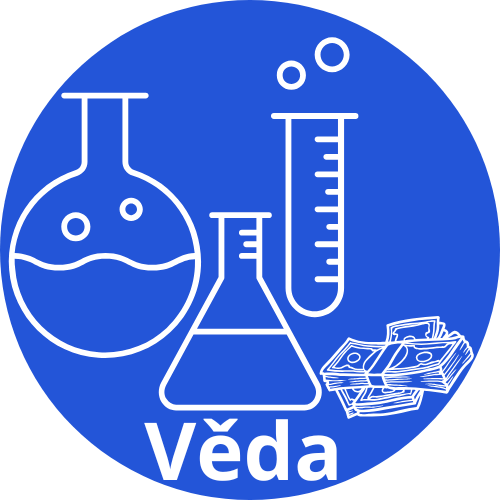

DOMŮ
ČTIVO
HRY
VIDEA
DOMŮ
ČTIVO
HRY
VIDEA
VĚDA

D&D - Dungeons & Dragons
Úvod
Dungeons and Dragons, zkráceně D&D, je na představivosti založená desková hra vedená vypravěčem, DMem, který provádí hráče hrou a hraje za postavy, které nejsou hráči (NPC). Hra probíhá tak, že...
Kde se berou peníze?
Dost lidí si někdy řeklo, kde se berou peníze? Na začátku se vyměňovala věc za věc, poté se přešlo na jednotný materiál např. zlato nebo mušle, poté se ustanovilo platidlo...
Jak funguje půjčka a co jsou úroky?
Půjčka, správně označováno jako úvěr, se může stát výborným způsobem, jak získat velký obnos peněz. Ovšem i výborným způsobem, jak se zadlužit do konce života a stát se bezdomovcem bez...